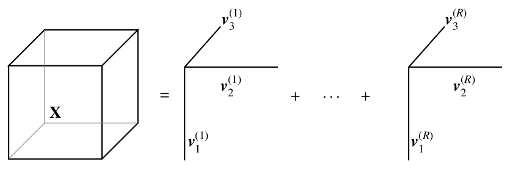
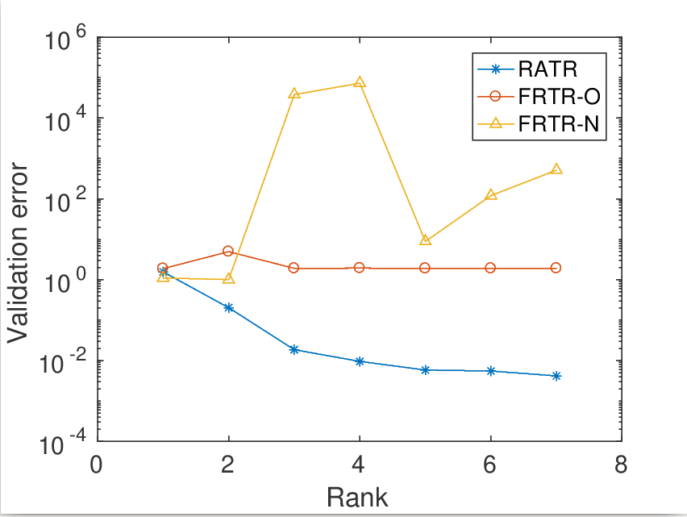
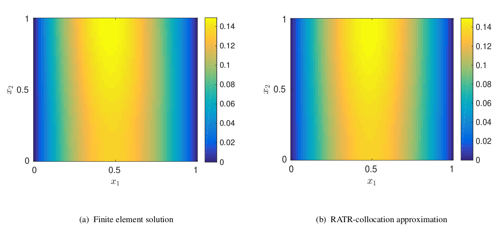
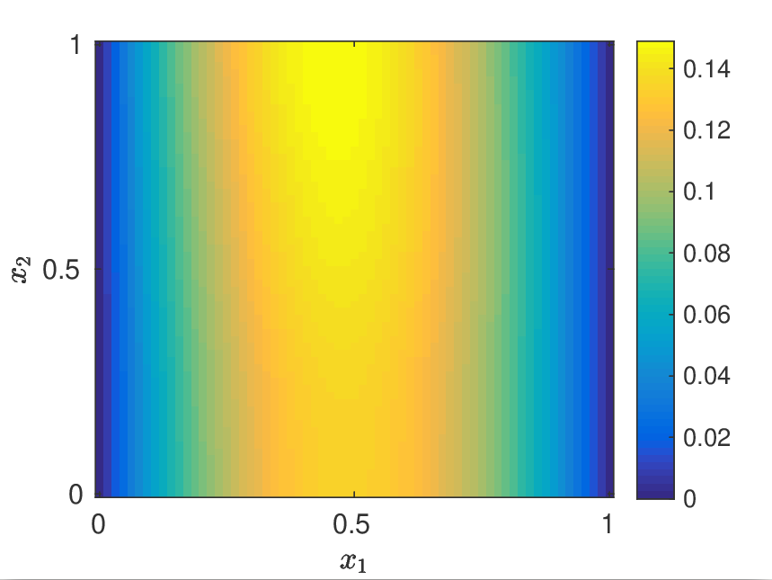
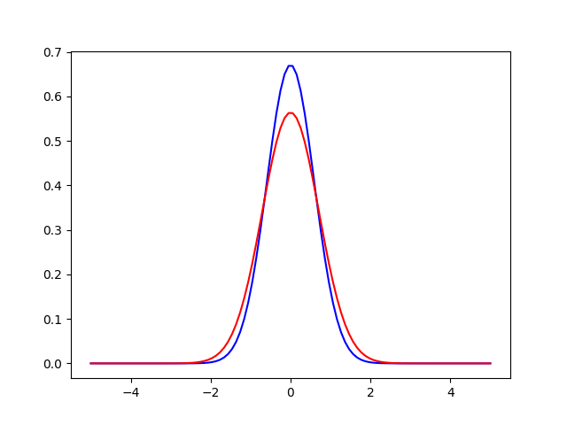

|
Research
Projects
Tensor recovery
|
 |
This work proposes a systematic model reduction approach based on rank adaptive tensor recovery for partial differential equation (PDE) models with high-dimensional random parameters. Since the standard outputs of interest of these models are discrete solutions on given physical grids which are high-dimensional, we use kernel principal component analysis to construct stochastic collocation approximations in reduced dimensional spaces of the outputs. To address the issue of high-dimensional random inputs, we develop a new efficient rank adaptive tensor recovery approach to compute the collocation coefficients.
Novel efficient initialization strategies for non-convex optimization problems involved in tensor recovery are also developed in this work.
|

|  |

|
Density estimation
|
 |
In this work, we study the performance of high-dimensional density estimation using flow-based generative model...
|
Talks
SIAM CSE 2019 - Rank adaptive tensor recovery based model reduction for partial differential equation with high-dimensional random inputs [Link]
CSIAM 2018 - Tensor recovery for PDEs with high-dimensional random inputs [Link]
|